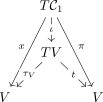

Sp (1)-
ABSTRACT. 𝔰𝔬∗(4n) Sp(1)-. Laplace-Runge-Lenz Sp(1)- . A. Weinstein. 𝔰𝔬∗(4n) T∗ℍ∗n∕Sp(1). ( ℍ∗n := ℍn∖{0} Sp(1) T∗ℍ∗n Sp (1) ℍ∗n.)
. Laplace-Runge-Lenz Weinstein.
Date: May 1, 2026.
The authors were supported by the Hong Hong Research Grants Council under RGC Project No. 16304014; SB was also supported by the grant NYUAD-065.
1.
. SO(4) SO(3). 𝔰𝔬(4,2) . I. A. Malkin V. I. Manko [1] 1966. ( 2 [2].) 𝔰𝔬(4,2) .
MICZ-. A. Barut G. Bornzin [3] . MICZ- MICZ- [4] [5] [6].
[7, 8] . [9]: Laplace-Runge-Lenz .
[10] U(1)- ( [11]). . Sp(1)- [12] U(1)-. Laplace-Runge-Lenz Sp(1)- Laplace-Runge-Lenz.
![ℍ thesetofquaternions
Hn(ℍ) theJordanalgebraofquaternionichermitian matricesofordern
Im ℍ thesetofimaginaryquaternions
i,j,k thestandardorthonormalbasis forIm ℍ such thatij = k
¯q thequaternionicconjugateofquaternionq,e.g., ¯k = − k
Req 1(q+ ¯q)
Im q 21(q− ¯q)
⌟ 2theinteriorproductofvectorswith forms
∧ thewedge productofforms
d theexteriorderivative operator
πX : T∗X → X thecotangentbundleprojection
G acompactconnectedLiegroup
𝔤,𝔤∗ theLiealgebraof G and itsdual
ξ an elementin𝔤
⟨, ⟩ eithertheparing ofvectors withco-vectorsorinnerproduct
⟨|⟩ theinnerproductontheJordan algebraHn(ℍ )
Ada theadjointactionofa ∈ G on𝔤
P → X aprincipalG -bundle
Θ a𝔤-valueddifferentialone- formon P that
definesa principalconnection onP → X
Ra therightaction onP bya ∈ G
Xξ thevector fieldon P whichrepresentsthe
infinitesimal rightaction onP by ξ ∈ 𝔤
F ahamiltonianG -space
ℱ := P ×G F thequotientofP × F bytheactionofG
Φ : F → 𝔤∗ theG -equivariantmoment map
ℱ♯ Sternbergphasespace
𝒲 Weinstein’suniversalphasespace](source0x.svg)
2.
Sp(1)- n μ 𝔰𝔬∗(4n) . 𝔰𝔬∗(4n) Hn(ℍ) n [13]. ( [14] ).
u ∈ V := Hn(ℍ) Lu u u,v ∈ V Suv = [Lu,Lv] + Luv [Lu,Lv] : LuLv −LvLu uv Luv Lu(v) u v. {uvw} Suv(w).
Suv . 𝔰𝔱𝔯 V . 𝔰𝔱𝔯 = 𝔰𝔲∗(2n) ⊕ ℝ ℝ Le — e.
𝔠𝔬 𝔰𝔱𝔯.
z V Xz :
V ∗ . V V ∗ w W Y w
𝔠𝔬 = 𝔰𝔬∗(4n) .
3.
A. Weinstein Sternberg. Sternberg . . A. Weinstein [16] Weinstein.
3.1. S. Sternberg A. Weinstein. S. Sternberg [15] A. Weinstein [16]. Sternberg:
- (i)
-
G G- P → X Θ
- (ii)
-
G F Ω G- Φ: F →𝔤∗. 𝔤 G.
- G Kirillov-Kostant-Souriau G.
Θ G- P → X 𝔤 P :
1) Ra−1∗Θ = AdaΘ a ∈ G 2) Θ(Xξ) = ξ ξ ∈𝔤.
a ∈ G Ra−1 a−1 P Ada a 𝔤 Xξ P ξ ∈𝔤 P f ∈ C∞(P)
[ℒXξ,ℒXη] = ℒX[ξ,η] [Xξ,Xη] = X[ξ,η].
() G P G T∗P G- ρ: T∗P →𝔤∗. πP T∗P → P ρ
: p ∈ P
Tp∗P 𝔤∗. ρ: T∗P →𝔤∗.
G- ρ (Rg)∗(Xξ) = XAd g−1(ξ) Adg∗(α) = α∘ Adg−1 α ∈𝔤∗. ρ d⟨ρ,ξ⟩ = −ξ ⌟ ωP. ωP T∗P ξ T∗P Xξ.
⟨ρ,ξ⟩ = piXξi. xi P .
ρ Φ G-
(x,y) −ρ(x) + Φ(y).
P → X G- ρ|Tp∗P: Tp∗P →𝔤∗ p ∈ P ρ: T∗P →𝔤∗ . ψ . ψ−1(0) T∗P ×F . 0 ∈𝔤∗ G ψ−1(0) 1 [17] ω ψ−1(0)∕G π∗ω = ι∗(ωP + Ω) ωP P π ι :
(ψ−1(0)∕G,ω) Weinstein 𝒲. .
“” Θ P → X . p ∈ P x p X ( Θ) TxX → TpP .
X P .
G- T∗P → F G-
Weinstein αΘ ψ−1(0) G
ωΘ ℱ♯ := ×GF αΘ∗(ωΘ) = ω. (ℱ♯,ωΘ) Sternberg Θ [15]. Sternberg Weinstein 𝒲.
3.2. Sternberg Sp(1)-. Sp(1)- ( ) ( ) n ≥ 2 ( ) μ ≥ 0. n μ Sternberg ℱμ♯ [12]:
- (i)
-
G Sp(1) ( SU(2)) G-
𝒞1 Hn(ℍ) n. Hn(ℍ) 𝒞1 Hn(ℍ). 𝒞1 Hn(ℍ) 𝒞1 [12] .
- (ii)
-
𝔤∗ 𝔤 := Im ℍ ⟨,⟩ i j k 𝔤. G
Ωμ Kirillov-Kostant-Souriau
ξ = ξ1i + ξ2j + ξ3k F :
(: ij = k.)
- (iii)
-
G-
( G F Im ℍ .) Φ G 2 (3.8)
Xη F F η Xη(ξ) = (ξ,[η,ξ]) ∈ TξF .
3.3. Weinstein Sp(1)-. Sp(1) ℍ∗n (Z,q) ∈ ℍ∗n × Sp(1) Z [q] — Z 1 × 1- [q]. Sp (1) T∗ℍ∗n . Tℍ∗n ℍ Tℍ∗n Z W . ℍn:
T∗ℍ∗n Tℍ∗n Tℍ∗n : U,V ∈ ℍn
T∗ℍ∗n Tℍ∗n 𝔤∗ 𝔤 ρ Tℍ∗n 𝔤 (Z,W) −Im(W†Z). ψ: Tℍ∗n × F →𝔤
g (Z,W,ξ) (Z ⋅ g−1,W ⋅ g−1,gξg−1).
ψ : Tℍ∗n ×𝔤 →𝔤 : −1(0) ξ = −Im(W†Z). G-. .
ξ1 = −⟨i,W†Z⟩ ξ2 = −⟨j,W†Z⟩ ξ3 = −⟨k,W†Z⟩ {ξ1,ξ2} = ξ3 (3.7) .
Sp(1)- Tℍ∗n ×𝔤 → Tℍ∗n −1(0) Sp(1)- −1(0) Tℍ∗n. ψ−1(0) Sp(1)- −1(0)
Tℍ∗n∕Sp(1). 𝒲μ
Tℍ∗n∕Sp(1). Sternberg ℱμ♯ Weinstein 𝒲μ Sternberg Tℍ∗n∕Sp(1).
(ii) 1 Hn(ℍ) Tℍ∗n∕Sp(1) 𝒲μ Sternberg ℱμ♯.
4.
Sp(1)- n μ. Sternberg ℱμ♯ T∗𝒞1. V := Hn(ℍ) T∗𝒞1 T𝒞1 ℱμ♯ T𝒞1 . x π ( V )

ι τV t V . x π ℱμ♯ → T𝒞1 x π. Hn(ℍ) ⟨∣⟩ u ∈ Hn(ℍ) ⟨x∣u⟩ ℱμ♯.
( ) Xe Y u .
. Sternberg Weinstein
Weinstein 𝒲μ .
- (i).
-
Sp(1) ⋅ (Z,W,ξ) 𝒲μ 𝒴u 𝒳e 1.
- (ii).
-
u v V := Hn(ℍ) Sp(1)-
Tℍ∗n. u ⋅ v u v. u v z w V :
T∗ℍ∗n∕Sp(1) Hn(ℍ).
- (iii).
-
e V (eα) V ℒ u = 𝒮 eu u ∈ V .
Proof.
- (i).
-
αΘ Θ. Z ∈ ℍ∗n x = nZZ†. (x,ẋ) 𝒞1 x (Z,Ż) Z ℍ∗n. (3.4)
Θ- T∗ℍ∗n → T∗𝒞1 (Z,⟨W, ⟩) (x,⟨π∣⟩) x = nZZ†
(x,ux) ∈ Tx𝒞1
(ZW†)+ = (ZW† + WZ†). (x,(ZW†) +) 𝒞1 x. (4.5)

- (ii).
-
{𝒳 u, 𝒳 v} = 0 {𝒴 u, 𝒴 v} = 0.
{uvz} = (u ⋅ v ⋅ z + z ⋅ v ⋅ u) {vuw} = (v ⋅ u ⋅ w + w ⋅ u ⋅ v).
𝒮 uv 𝒳 z 𝒴 w Tℍ∗n ( T∗ℍ∗n) Sp(1) Sp(1) T∗ℍ∗n T∗ℍ∗n∕Sp(1) Hn(ℍ).
- (iii).
-
ℒ u = ⟨W,uZ⟩

1. . (ii) 𝔰𝔬∗(4n) T∗ℍ∗n∕Sp(1) . Sternberg T∗ℍ∗n∕Sp(1) (i) 1. 1 (iii) .
4.1. 1 Sp(1)- n μ.
4.2. Sternberg T∗ℍ∗n∕Sp(1) Sternberg T∗ℍ∗n∕Sp(1). Sp(1) T∗ℍ∗n Sp(1) n 6 [12].
5.
1 Suv Xz Y w
. ℒu 𝒮ue ℒu,v (𝒮uv + 𝒮vu).
1. eα Hn(ℍ). α β. 1 :
- (i)
-
𝒳eαℒeα = n𝒳eℒe 𝒴eαℒeα = n𝒴eℒe
- (ii)
-
4 nℒeα,uℒeα = −𝒳u𝒴e + 𝒳e𝒴u
- (iii)
-
𝒳eα2 = n𝒳e2 𝒴eα2 = n𝒴e2
- (iv)
-
2 nℒeα,u𝒳eα = −𝒳uℒe + ℒu𝒳e 2 nℒeα,u𝒴eα = 𝒴uℒe −ℒu𝒴e
- (v)
-
𝒳eα𝒴eα = n(ℒe2 + μ2),
- (vi)
-
ℒeα,eβ2 = 𝒳e𝒴e −ℒe2 + μ2.
References
[1] I. A. Malkin and V. I. Man’ko, Symmetry of the Hydrogen Atom, JETP Letters 2 (1966), 146-148.
[2] A. O. Barut and H. Kleinert, Transition Probabilities of the H-Atom from Noncompact Dynamical Groups, Phys. Rev. 156 (1967), 1541-1545.
[3] A. O. Barut and G. Bornzin, SO(4, 2)-Formulation of the Symmetry Breaking in Relativistic Kepler Problems with or without Magnetic Charges, J. Math. Phys. 12 (1971), 841-843.
[4] G. W. Meng, MICZ-Kepler problems in all dimensions, J. Math. Phys. 48, 032105 (2007).
[5] G. W. Meng and R. B. Zhang, Generalized MICZ-Kepler Problems and Unitary Highest Weight Modules, J. Math. Phys. 52, 042106 (2011).
[6] G. W. Meng, The Poisson Realization of so(2, 2k+2) on Magnetic Leaves and and generalized MICZ-Kepler problems, J. Math. Phys. 54 (2013), 052902.
[7] G. W. Meng, Euclidean Jordan Algebras, Hidden Actions, and J-Kepler Problems, J. Math. Phys. 52, 112104 (2011)
[8] G. W. Meng, Generalized Kepler Problems I: Without Magnetic Charge, J. Math. Phys. 54, 012109(2013).
[9] G. W. Meng, The Universal Kepler Problems, J. Geom. Symm. Phys. 36 (2014) 47-57
[10] S. Bouarroudj and G. W. Meng, The classical dynamic symmetry for the U(1)-Kepler problems, arXiv:1509.08263
[11] G. W. Meng, On the trajectories of U(1)-Kepler Problems, In: Geometry, Integrability and Quantization, I. Mladenov, A. Ludu and A. Yoshioka (Eds), Avangard Prima, Sofia 2015, pp 219 - 230
[12] G. W. Meng, On the trajectories of Sp(1)-Kepler Problems, Journal of Geometry and Physics 96 (2015), 123-132.
[13] P. Jordan, Über die Multiplikation quantenmechanischer Größen, Z. Phys. 80 (1933), 285-291.
[14] J. Faraut and A. Korányi, Analysis on Symmetric Cones, Oxford Mathematical Monographs, 1994.
[15] S. Sternberg, Minimal coupling and the symplectic mechanics of a classical particle in the presence of a Yang-Mills field. Proc Nat. Acad. Sci. 74 (1977), 5253-5254.
[16] A. Weinstein, A universal phase space for particles in Yang-Mills fields. Lett. Math. Phys. 2 (1978), 417-420.
[17] J. Marsden and A. Weinstein, Reduction of symplectic manifolds with symmetry, Reports on Math. Phys. 5 (1974), 121-130.
DIVISION OF SCIENCE AND MATHEMATICS, NEW YORK UNIVERSITY ABU DHABI, PO BOX 129188, ABU DHABI, UNITED ARAB EMIRATES.
Email address: sofiane.bouarroudj@nyu.edu
DEPARTMENT OF MATHEMATICS, HONG KONG UNIV. OF SCI. AND TECH., CLEAR WATER BAY, KOWLOON, HONG KONG.
Email address: mameng@ust.hk